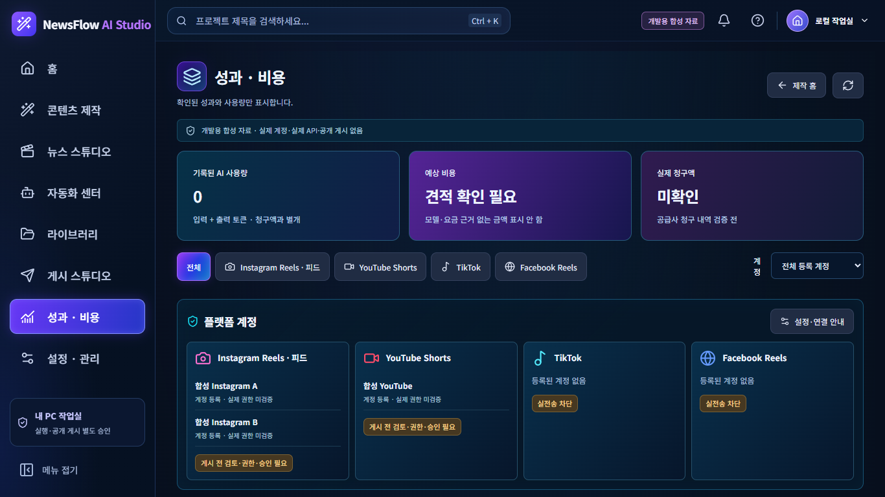

NewsFlow AI — 최종 승인 PNG / React 구현 비교뉴스 쇼츠
기사·대본·세로 미리보기·음성 4영역과 하단 장면 타임라인, 저장·Revision 복구 유지
대본/음성/생성의 기존 승인 모달과 실제 등록 모델을 유지. 예시 인물·비용·장면 사진을 가짜 결과로 채우지 않음.
최종 승인 원본 · 1536×1024

실제 React · 1920×1080

실제 React · 1366×768

캐릭터 쇼츠
3단계·참조 PNG·스토리 주제·세로 미리보기·고정 설정·스토리보드 적용
새 주제는 새 초안 폼으로 전달. 저장 스토리 임의 편집·다중 캐릭터 관리·무인 합성은 추가하지 않음. 단계별 견적/승인 유지.
최종 승인 원본 · 1536×1024

실제 React · 1920×1080

실제 React · 1366×768

독립 AI 이미지
지시문/모델·크기·품질 → 중앙 캔버스 → 우측 초안·결과 이력 적용
스타일 프리셋·자유 편집 등 미지원 도구는 추가하지 않음. 참조 기반 유료 편집 미구현 안내 유지.
뉴스 기반 이미지
기사 → 카드 기획 → 이미지 캔버스 → 문구·속성·출처 4영역 적용
뉴스 카드/생성 결과/게시물/선정 기록을 구분. 생성·출처 검토는 기존 모달 경로를 유지.
최종 승인 원본 · 1536×1024

실제 React · 1920×1080

실제 React · 1366×768

TOP 3 자동 피드
순위·분석 선택, 공통 모델 설정, 3개 독립 결과, 우측 출처/승인 영역 적용
기본값과 진행 중 작업의 고정 설정을 구분. 모드 번호를 추가하지 않고 TOP 1·2·3 순위만 유지. 유료 실행은 기존 견적/승인 조건 유지.
최종 승인 원본 · 1536×1024

실제 React · 1920×1080

실제 React · 1366×768

뉴스 스튜디오
보관 기사·출처 상세·다음 제작 단계의 3열 적용
최신 TOP 3가 없는 자료를 인기 뉴스로 꾸미지 않음. 대본/영상 편집기를 중복 추가하지 않음.
최종 승인 원본 · 1536×1024

실제 React · 1920×1080

실제 React · 1366×768

자동화 센터
예약 목록·선택 예약·하단 실행 이력 배치 적용
실제 지원하는 저장·상태 변경만 유지. 미지원 예약 템플릿·무인 캐릭터/TOP 3 실행 스위치를 만들지 않음. 시안의 전면 표와 달리 기존 목록 선택 계약 유지.
최종 승인 원본 · 1536×1024

실제 React · 1920×1080

실제 React · 1366×768

라이브러리
왼쪽 검색·유형 필터, 중앙 콘텐츠 카드, 우측 미리보기/보관 관리 적용
없는 썸네일은 빈 상태. 가짜 보관 용량·기간/다중 선택 기능 추가 없음. 제작실 이동·휴지 보관은 기존 계약 유지.
최종 승인 원본 · 1536×1024

실제 React · 1920×1080

실제 React · 1366×768

게시 스튜디오
5단계 안내·초안 선택·미리보기/검토·4플랫폼 계정·기록 적용
실제 검토·최종 실행은 기존 승인 폼으로 분리. TikTok/Facebook 실전송 차단. 미지원 일괄 예약·썸네일 AI 추천은 표시하지 않음.
최종 승인 원본 · 1536×1024

실제 React · 1920×1080

실제 React · 1366×768

성과·비용
요약 카드·4플랫폼·등록 계정 필터·콘텐츠·사용량·비용 구분 적용
Instagram 다중 계정은 실제 메타데이터만 표시. 계정 식별자 없는 지표는 계정별로 귀속시키지 않음. 미확정 견적·청구액은 금액으로 꾸미지 않음.
최종 승인 원본 · 1536×1024

실제 React · 1920×1080

실제 React · 1366×768

설정·관리
7개 기능 탭·기존 7단계 가이드·계정·기본값·모델/API·출처·Windows 영역 적용
키 저장≠인증 성공. Windows 조회는 명시적 클릭 시만 실행. 시안의 예시 모델·연결 성공·자동 시작 활성화를 그대로 복제하지 않음.
최종 승인 원본 · 1536×1024

실제 React · 1920×1080

실제 React · 1366×768

보호된 홈·콘텐츠 제작 홈
두 해상도 4쌍 캡처는 바이트 동일입니다. 검증 근거